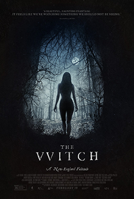
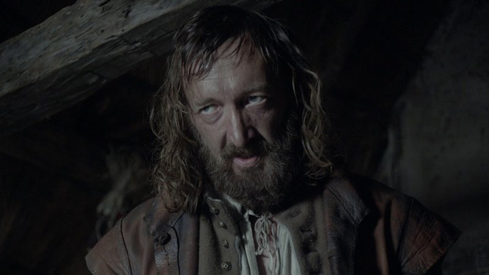

Welcome to the horror page, enjoy from the movies
The weekly movie: The Witch
skip the plot and go watch the trailerThe plot:
In 1630s New England, English settler William and his family—wife Katherine, teenage daughter Thomasin, pubescent son Caleb, and young fraternal twins Mercy and Jonas—are banished from a Puritan settlement over a religious dispute. The family builds a farm near a large, secluded forest and Katherine bears her fifth child, Samuel. One day, when Thomasin is playing peekaboo with Samuel near the edge of the wood, the baby abruptly disappears. It is soon revealed that a witch has stolen and killed the unbaptized Samuel to use his body to make a flying ointment. Katherine, devastated by Samuel's abduction, spends her days crying and praying. As a blight has afflicted the family's crops, William decides to try to get enough food to last through the upcoming winter by hunting wild animals, and he takes Caleb to the woods, where he discloses that he secretly traded Katherine's prized silver cup for hunting supplies. When they get home, the twins have riled-up the family's billy goat, Black Phillip, and William quickly puts Black Phillip back in his pen. Katherine comes outside and chastises William and Caleb for disappearing and Thomasin for not watching the twins well enough. Thomasin is sent to wash William's clothes at the brook, and, when Mercy bothers her, she teases the girl by saying she is a witch and gave Samuel to the Devil. At dinner, Katherine questions Thomasin about the disappearance of the cup, and William remains silent. That night, the children overhear their parents make plans to send Thomasin away to serve another family. Early the next morning, Thomasin finds Caleb in the stable preparing to check a trap in the forest, and forces him to take her with him by threatening to awaken their parents. In the woods, they spot a hare, which sends their horse into a panic. Their dog Fowler chases the hare, and Caleb pursues Fowler. The horse throws Thomasin, knocking her unconscious, and runs away. Caleb becomes lost and discovers Fowler's disemboweled body. He then stumbles upon a hovel from which the witch, disguised as a beautiful woman dressed in a red cape, emerges and kisses him. William finds Thomasin and takes her home, and Katherine scolds her for taking Caleb into the woods. To defend his daughter, William finally admits he sold the cup. Later that night, as a storm rages, Thomasin finds Caleb outside the cabin, naked, delirious, and mysteriously ill. The next day, the twins tell Thomasin that Black Phillip told them she made Caleb sick, and, when Thomasin attempts to milk the nanny goat, blood comes out of the udder. Caleb awakens and begins to convulse and scream and rant feverishly. After he vomits up a whole rotting apple, the twins accuse Thomasin of witchcraft and claim to forget the Lord's Prayer before falling into convulsions themselves. Katherine, William, and Thomasin say the prayer over Caleb, which calms him for a moment, but then he amorously proclaims his love for Christ and dies.
Believing Thomasin to be a witch, William tells her that Christ can undo her bargain with the Devil if she admits the truth. Thomasin calls him hypocritical and weak, and accuses the twins, aided by and under the influence of Black Philip, who she says is Lucifer, of bewitching the farm. Enraged and confused about the identity of the culprit, William seals his living children in the goat house and says the family will return to the settlement in the morning. Thomasin denies being a witch, but the twins do not answer when she asks if they truly speak with Black Phillip. Katherine and William bury Caleb, and that night Thomasin observes William break down and ask Christ to punish him for his pride and cowardice, but save his children, and then eat dirt to show his contrition. Later, the witch sneaks into the goat house and drinks blood from the nanny goat before turning to attack the twins, while, in the cabin, Katherine has a hallucinatory vision in which Caleb and Samuel have returned. Caleb says Katherine can see them often and asks if she will look at a book. She tells him to wait while she feeds Samuel, but the baby is actually a raven that pecks at her breast, leaving her bloody in the morning. William awakens in the morning to find the goat house destroyed, the goats eviscerated, the twins missing, and an unconscious Thomasin lying nearby. As she stirs, Black Phillip gores and kills William. An unhinged Katherine, who now accuses Thomasin of seducing William and Caleb, in addition to causing the tragedies that have befallen the family, attacks her only remaining child. In self-defense, Thomasin tearfully kills her mother with a bill hook that is within reach. Now alone, Thomasin falls asleep at the table in the cabin until after dark. She is awakened by a chiming sound coming from the goat house, and she follows Black Phillip inside, where she urges him to speak to her. The goat responds in a human voice, asking if she would like to live a life of luxury, and materializes into a handsome, black-clad man. He tells Thomasin to remove her clothes and sign her name in a book that appears before her. Thomasin, accompanied by Black Phillip as a goat, then enters the forest nude, where she finds a coven holding a Witches' Sabbath around a bonfire. The witches begin to levitate, and Thomasin joins them, laughing maniacally as she ascends above the trees.
The trailer for the movie "the witch":
back to home page